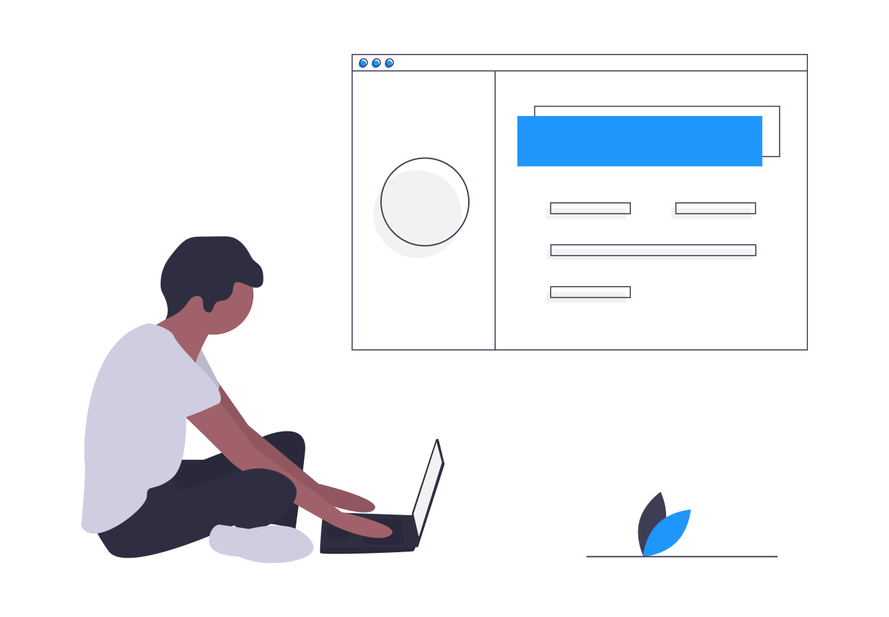
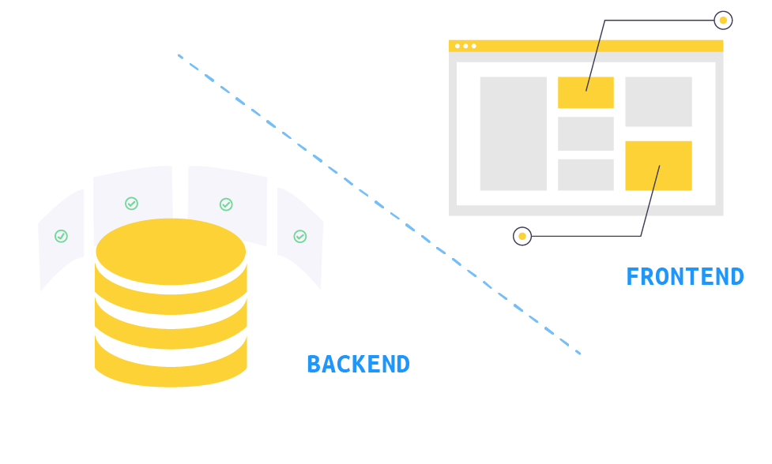

Build a website for your business? What do you need?
2020-07-19 • 4 min read

If you are starting a business in 2020, your first step is almost always to create a website. Though some websites are easier to create than another, an intro-page is as much a website as Facebook. While one couldn’t possibly create Facebook with SquareSpace, it’s possible to create something simpler that represents your brand on Wix , Wordpress, and many other website builders. Why are people still hire developers when there are website builders?
🛍️Read more: how Chopin by apio compare to other ecommerce website builders?
🛍️Read more: a step-by-step guide on how to setup online store with Chopin
What does a website consist of? ¶
What makes one website more complicated to build than another? If you look at Netflix’s streaming infrastructure, showing a couple pictures in a grid is not that difficult to create with any of the drag-and-drop website builders. But what makes you pay Netflix $12.99 a month is not the grid of movie or tv show thumbnails - it’s the fact they can stream anything at anytime on any device of your choice.
In the software engineering world, we separate these two parts as frontend and backend. You can think of frontend as the clothes we wear everyday and backend as the actual organs to keep us alive. It’s not too hard to picture, for a very complex application, frontend is probably 5% of the work and backend is what makes software product valuable.

Backend is hard ¶
Facebook generates $70b revenue by building a world class backend. It’s able to create $70b because it captures your attention as much as it possibly can and it’s annoyingly addictive. The fontend feed layout can look as good as it could be, but without backend algorithms constantly crunching out the most relevant posts to display, no one would stick to it.
What’s even more difficult, it’s one thing to have several users, but when you have billions of users, you need to put together billions of optimized feeds for each of them constantly - that’s coordination of tons of computers just to think about it!
An ecommerce use case ¶
Let’s not compare our relatively “simple” website to Facebook. Let’s take a moderately simple, common yet not so straightforward website case - an online store.
When you think of a store, you’d need:
- Product catalog: a list of products you want to sell, how much to sell them, description of the product.
- Order intake: recording orders that customer submitted, who they are, what did they want, where to ship to?
- Payment: passing order amount to payment processor and payment status back to store order system. It generally involves API integration.
These integrations are almost complicated enough to prevent non-technical business owners from building on their own online stores. It’s so complicated that even Shopify, Woocommerce, Wordpress have provided tons of plugin features, you’d still have to hire another developer to create and maintain it.
Can it be any easier? ¶
One of the notorious issue when hiring developer is that when they leave, you have no way to maintain your own website but to hire another one and rebuild from scratch.
We keep asking? Why does this have to be the case? This goes back to the above, because backend is hard, and no one understands how it works. But is it really? In our e-commerce scenario, when you see a spreadsheet of product catalog and a spreadsheet of order intake, is it really that hard to understand what’s going on? People have been doing business like that for decades before computers were a thing.
But now two simple spreadsheets are stored in a database and hidden in layers of application codes. It’s not possible for a non-developer to understand how everything works.
It does not have to be that way. If people understand spreadsheet and want to sell online, that’s enough. Why don’t we create a way for people to run their online store with spreadsheets? We couldn’t bear the thought that there’s an easier way for people to create an online store and actually understand how everything is connected. At apio, we want to make your first step to enter the e-commerce world as easy as possible, before going for monstrous solutions.

Summary ¶
This is why we built Chopin - a FREE static online store generator, allowing users to update catalog and collect orders with google sheets. We’d like to lift the technology and financial barrier for small business owners to build their own online store and start selling!
Happy Selling! 💰